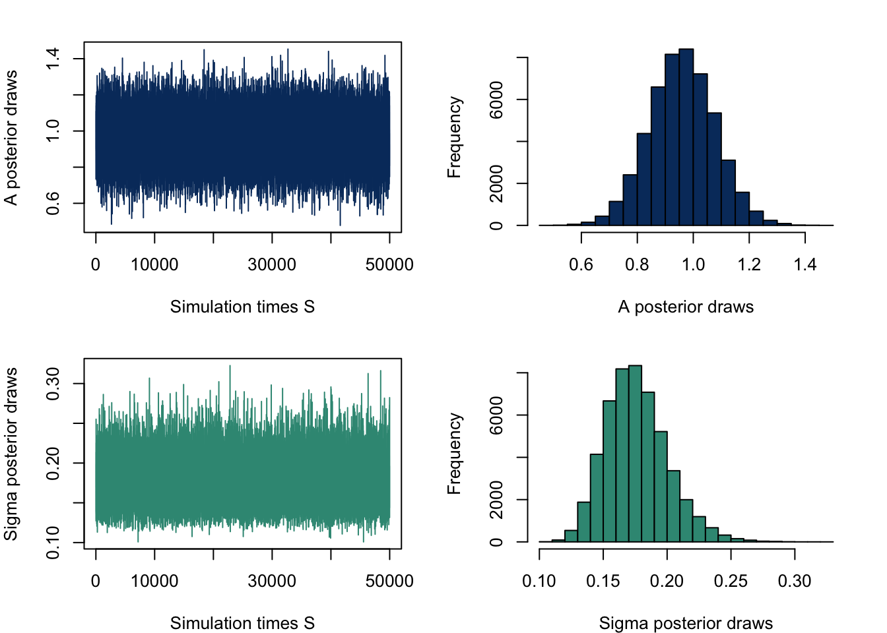
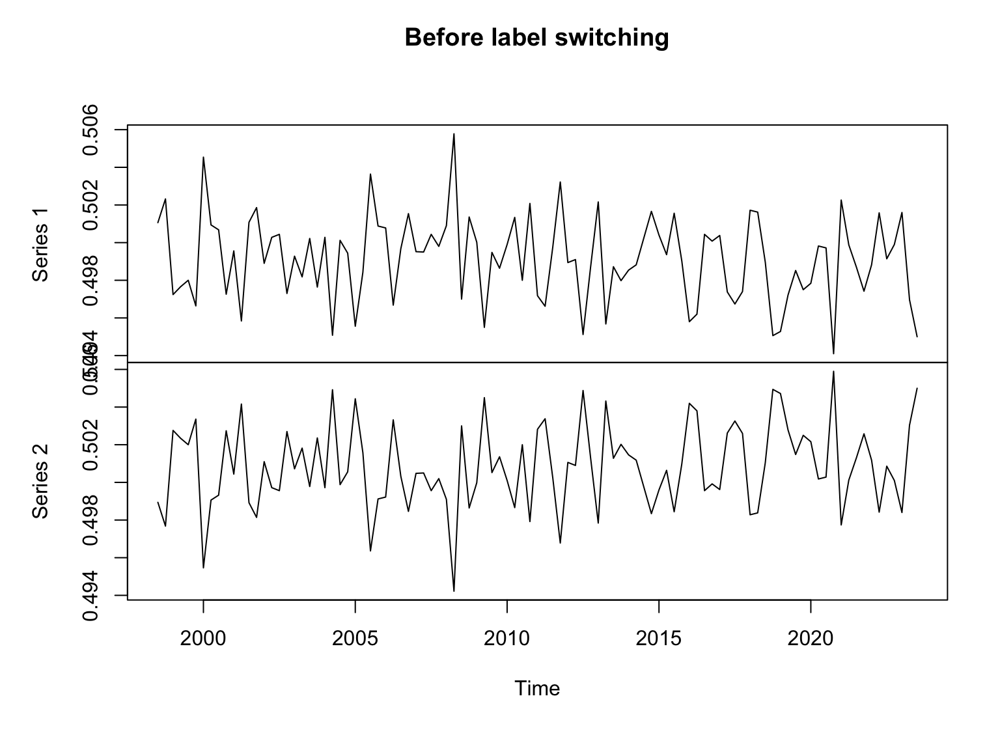
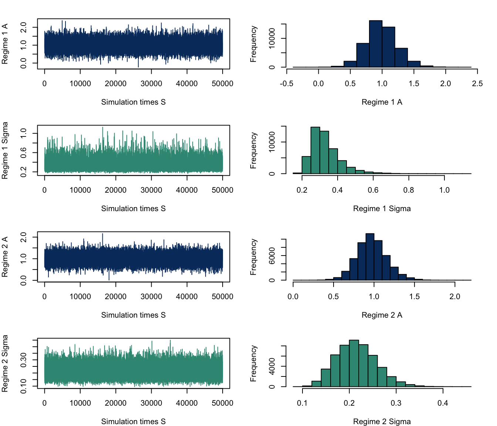
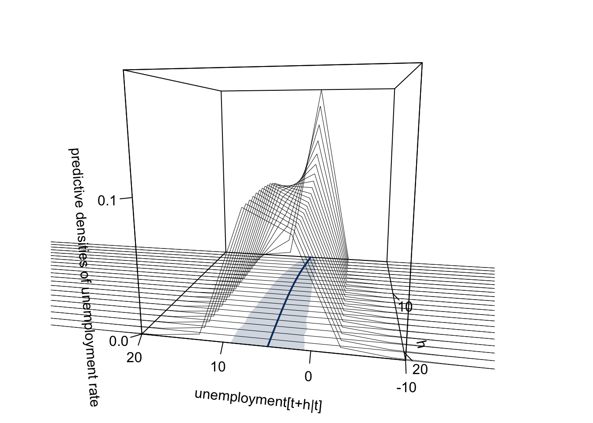

Forecasting Unemployment rate in Australia using Bayesian VARs with Regime change
Abstract. Research on how Bayesian VARs with regime change affect the forecasting of unemployment rate in Australia
Keywords. bsvars, minnesota, dummy-observation, regime change, forecasting, R,
Introduction
The objective of this research project is to develop a Bayesian Vector Autoregression (BVAR) model incorporating regime changes to analyse the dynamic relationships among macroeconomic variables, assess their impact on the unemployment rate over different economic regimes through time-varying parameters, and enhance forecasting accuracy.
The question to be addressed in this research is: Can a Bayesian VAR model with regime changes accurately capture shifts in the relationships between unemployment rate and other macroeconomic variables for improved forecasting performance?
Motivation
Understanding the impact of economic regime changes on the unemployment rate dynamics holds substantial importance in grasping the complexities of the labour market. The labour market is highly susceptible to various shocks and policy interventions, making accurate forecasting of the unemployment rate crucial for informed decision-making. By employing a Bayesian Vector Autoregression (BVAR) model that allows the parameters to vary across different economic regimes, we can gain a nuanced understanding of how the unemployment rate responds to diverse economic conditions and the efficacy of policies. This research enhances forecasting accuracy and offers valuable insights into the underlying drivers of unemployment fluctuations. By better understanding these dynamics, policymakers can make more informed decisions to counter economic instability.
Data properties
For the investigation of the problem at hand, the selection of variables includes a comprehensive set of economic indicators and demographic factors that are crucial for understanding labour market dynamics and their impact on unemployment rates.
For instance, GDP growth provides a broad measure of economic activity, serving as an indicator of overall labour market. Consumer price index, wage price index and interest rate reflect macroeconomic conditions and monetary policy, influencing consumer spending, business investment, and hiring decisions, thereby affecting unemployment trends. Government spending impacts aggregate demand and employment levels, while demographic factors such as population growth rate, average age of the workforce, and level of highest educational attainment offer insights into labour force participation and composition. For the purpose of this research, the variables are GDP, wage price index and inflation.
Each variable’s form/transformation will depend on its specific characteristics and the nature of its relationship with unemployment. For instance, variables like GDP may be included in their original form, while others, such as wpi might need to be computed from the index data.
It’s important to note that all data will be quarterly since the interest forecasting for unemployment will be conducted at a quarterly frequency. Quarterly frequency is suitable for capturing the diverse movements influencing unemployment, including short-term shocks, long-term trends, and policy changes, providing a balanced perspective.
\[\begin{align*} & unmp_{t} & : & \text{Unemployment rate} \\ & gdp_{t} & : & \text{GDP per capita: Chain volume measures - Percentage changes} \\ & wpi_{t} & : & \text{Wage price index} \\ & cashrate_{t} & : & \text{Cash rate} \\ \end{align*}\]
Data Visualisation
Figure 1: Time series plots
To stabilize the variance, log tranformation is performed on all variables except unemployment rate.

Figure 1: Transformed Time series plots
From the plot of the variables, some show stationary and some non-stationary, which can create some challenges in general analysis . Therefore, the ACF test is performed to identify patterns and trend.

Figure 2: ACF plots
The ACF plots show the variables have persistence or dependence in the data as the they are slowly decaying, indicates that there is a strong correlation between each variable and its past values, though this auto correlations decrease as lags increase.

Figure 3: PACF plots
The PACF plots show high autocorrelation at lag 1, and have clear cut offs.
The ADF is performed to further determine the stationary properties of the data. Null hypothesis: a unit root is present Alternative hypothesis: stationary
Dickey_Fuller p_value
unmp_df -2.545 0.350
gdp_df -1.826 0.649
wpi_df -2.265 0.467
cashrate_df -3.409 0.056General Model
Hypothesis
Var(p) model \[\begin{aligned} y_t = \beta_0 + \beta_1 y_{t-1} + \beta_2 x_{1, t-1} + \beta_3 x_{2, t-1} + \ldots + \beta_n x_{n, t-1} + \varepsilon_t \end{aligned}\] Var(p) model with regime change, meaning time-varying parameters \[\begin{aligned} y_t &= \beta_{0,S_t} + \beta_{1,S_t} y_{t-1} + \beta_{2,S_t} x_{1, t-1} + \beta_{3,S_t} x_{2, t-1} + \ldots + \beta_{n,S_t} x_{n, t-1} + \varepsilon_t \\ \end{aligned}\] Probability of transitioning from one state to another \[\begin{aligned} P(S_t = j | S_{t-1} = i) &= \pi_{ij} \end{aligned}\]Matrix form
\[\begin{align*} \mathbf{Y}_t = \boldsymbol{\beta}_{S_t} \mathbf{X}_t + \boldsymbol{E}_t \end{align*}\]
\[\begin{align*} \boldsymbol{E}_t \sim MN(0_T, \Sigma, I_T) \end{align*}\]
\begin{align*} \mathbf{Y}_t & : \text{Matrix of response variables} \\ \boldsymbol{\beta} & : \text{Coefficient matrix corresponding to regime state} \\ S_t & : \text{Regime state} \\ \mathbf{X}_t & : \text{Matrix of predictor variables} \\ \boldsymbol{\varepsilon}_t & : \text{Error term vector} \end{align*}
\begin{align*} \mathbf{Y}_t = \begin{pmatrix} \text{Unemployment}_t \\ \text{GDP}_t \\ \text{WPI}_t \\ \text{CashRate}_t \\ \end{pmatrix} \end{align*}
The model’s equations include time-varying parameters, such as the coefficients of lagged variables, which adapt to changing economic conditions.
Baseline Model with Minnesota prior
The model follows the Normal Inverse Wishart distribution.
Likelihood function kernel \[\begin{align} L(A,\Sigma|Y,X) \propto det(\Sigma)^{-\frac{T}{2}}exp\{-\frac{1}{2}tr[\Sigma^{-1}(Y-XA)'(Y-XA)]\} \end{align}\]
Minnesota Prior distribution
The Minnesota prior is commonly used in Bayesian Vector Autoregression (BVAR) models due to its ability to impose shrinkage towards zero on the coefficients, effectively regularizing the estimation process. The Minnesota prior aligns effectively with the stylized fact of nonstationarity observed in macroeconomic variables.
\[\begin{align*} p(A, \Sigma) = p(A \mid \Sigma) \cdot p(\Sigma) \\ A \mid \Sigma \sim \text{MN}_{K \times N} (\underline{A}, \Sigma, \underline{V}) \\ \Sigma \sim \text{IW}_{N} (\underline{S}, \underline{v})\\ \end{align*}\]
With lags = 4 and N = 4
\[\begin{align*} \underline{A} = \begin{bmatrix} \mathbf{0}_{4 \times 1} & \mathbf{I}_{4} & \mathbf{0}_{4 \times (4-1)4} \end{bmatrix}' = \begin{bmatrix} 0 & 1 & 0 & 0 & 0 & 0 & 0 & 0 & 0 & 0 & 0 & 0 & 0 & 0 & 0 & 0 & 0\\ 0 & 0 & 1 & 0 & 0 & 0 & 0 & 0 & 0 & 0 & 0 & 0 & 0 & 0 & 0 & 0 & 0\\ 0 & 0 & 0 & 1 & 0 & 0 & 0 & 0 & 0 & 0 & 0 & 0 & 0 & 0 & 0 & 0 & 0\\ 0 & 0 & 0 & 0 & 1 & 0 & 0 & 0 & 0 & 0 & 0 & 0 & 0 & 0 & 0 & 0 & 0\\ \end{bmatrix}' \end{align*}\]
The column-specific prior covariance of A \[\begin{align*} \underline{V} &= \text{diag}\left( \begin{bmatrix} k_2 & k_1(\mathbf{p}^{-2} \otimes 1'_4) \end{bmatrix} \right)\\ \mathbf{p} &= \begin{bmatrix} 1 & 2 & 3 & 4 \\ \end{bmatrix} \end{align*}\] \[\begin{align*} & k_2 : \text{overall shrinkage for the constant term} \\ & k_1 : \text{overall shrinkage levels for autoregressive slopes} \\ \end{align*}\]
Prior covariance matrix \[\begin{bmatrix} k_2 & 0 & 0 & 0 & 0 & 0 & 0 & 0 & 0 & \cdots & 0\\ 0 & k_1 & 0 & 0 & 0 & 0 & 0 & 0 & 0 & \cdots & 0\\ 0 & 0 & k_1 & 0 & 0 & 0 & 0 & 0 & 0 & \cdots & 0\\ 0 & 0 & 0 & k_1 & 0 & 0 & 0 & 0 & 0 & \cdots & 0\\ 0 & 0 & 0 & 0 & k_1 & 0 & 0 & 0 & 0 & \cdots & 0\\ 0 & 0 & 0 & 0 & 0 & \frac{k_1}{4} & 0 & 0 & 0 & \cdots & 0\\ 0 & 0 & 0 & 0 & 0 & 0 & \frac{k_1}{4} & 0 & 0 & \cdots & 0\\ 0 & 0 & 0 & 0 & 0 & 0 & 0 & \frac{k_1}{4} & 0 & \cdots & 0\\ 0 & 0 & 0 & 0 & 0 & 0 & 0 & 0 & \frac{k_1}{4} & \cdots & 0\\ \vdots & \vdots & \vdots & \vdots & \vdots & \vdots & \vdots & \vdots & \vdots & \ddots & 0 \\ 0 & 0 & 0 & 0 & 0 & 0 & 0 & 0 & 0 & 0 & \frac{k_1}{16} \end{bmatrix}\]The joint posterior distribution
\[\begin{align*} p(A,\Sigma|Y,X) &\propto L(A,\Sigma|Y,X)p(A,\Sigma) \\ &= L(A,\Sigma|Y,X)p(A|\Sigma)p(\Sigma) \end{align*}\]
\[\begin{align} p(A,\Sigma|Y,X) &\propto \det(\Sigma)^{-\frac{T}{2}} \\ &\times exp\{-\frac{1}{2}tr[\Sigma^{-1}(Y-XA)'(Y-XA)]\} \\ &\times \det(\Sigma)^{-\frac{N+K+\underline{v}+1}{2}} \\ &\times exp\{-\frac{1}{2}tr[\Sigma^{-1}(A-\underline{A}) \underline{V}^{-1}(A-\underline{A})]\} \\ &\times exp\{-\frac{1}{2}tr[\Sigma^{-1}\underline{S}]\} \end{align}\]
The full conditional joint posterior have the following form \[\begin{align} p(A|Y,X,\Sigma) &\sim MN_{K \times N}(\overline{A}, \Sigma,\overline{V} ) \\ p(\Sigma|Y,X) &\sim IW_{N}(\overline{S}, \overline{v})\\ \\ \overline{V} &= (X'X + \underline{V}^{-1})^{-1} \\ \overline{A} &= \overline{V}(X'Y+\underline{V}^{-1}\underline{A}) \\ \overline{v} &= T + \underline{v} \\ \overline{S} &= \underline{S}+Y'Y+\underline{A}'\underline{V}^{-1}\underline{A}-\overline{A}' \overline{V}^{-1}\overline{A} \\ \end{align}\]
The posterior draws are obtain with the following code
###############################################
# Posterior draws Normal-inverse Wishart
###############################################
posterior_draws = function (S, Y, X, A.prior, V.prior, S.prior, nu.prior){
# Posterior parameters
V.bar.inv = t(X)%*%X + diag(1/diag(V.prior))
V.bar = solve(V.bar.inv)
A.bar = V.bar%*%(t(X)%*%Y + diag(1/diag(V.prior))%*%A.prior)
nu.bar = nrow(Y) + nu.prior
S.bar = S.prior + t(Y)%*%Y + t(A.prior)%*%diag(1/diag(V.prior))%*%A.prior -
t(A.bar)%*%V.bar.inv%*%A.bar
S.bar.inv = solve(S.bar)
# Posterior draws
Sigma.posterior = rWishart(S, df=nu.bar, Sigma=S.bar.inv)
Sigma.posterior = apply(Sigma.posterior,3,solve)
Sigma.posterior = array(Sigma.posterior,c(N,N,S))
A.posterior = array(rnorm(prod(c(dim(A.bar),S))),c(dim(A.bar),S))
L = t(chol(V.bar))
for (s in 1:S){
A.posterior[,,s]= A.bar + L%*%A.posterior[,,s]%*%chol(Sigma.posterior[,,s])
}
output = list(A.posterior=A.posterior, Sigma.posterior=Sigma.posterior)
return(output)
}
sample_minnesota = posterior_draws(S=50000, Y, X, A.prior, V.prior, S.prior, nu.prior)
sample_minnesota_A = sample_minnesota$A.posterior
sample_minnesota_Sigma = sample_minnesota$Sigma.posterior| 1 | 2 | 3 | 4 | 5 | 6 | 7 | 8 | 9 | 10 | 11 | 12 | 13 | 14 | 15 | 16 | 17 |
|---|---|---|---|---|---|---|---|---|---|---|---|---|---|---|---|---|
| 0.136077 | 0.960000 | -0.021506 | 0.053533 | -0.162047 | -0.037728 | 0.003492 | 0.014125 | 0.154908 | -0.051878 | 0.006933 | 0.006051 | 0.036237 | 0.028663 | 0.002400 | 0.004038 | -0.000543 |
| 3.317267 | 0.119860 | 0.342575 | 0.366206 | 0.111462 | 0.132343 | 0.205321 | 0.207407 | 0.147811 | 0.102596 | 0.140604 | 0.141155 | 0.107893 | 0.078081 | 0.106231 | 0.106277 | 0.072322 |
| 0.005136 | 0.005730 | 0.998521 | -0.000516 | 0.001196 | 0.001224 | -0.000218 | -0.000099 | 0.000603 | -0.002387 | -0.000018 | -0.000020 | -0.000633 | -0.001204 | 0.000047 | -0.000021 | -0.001251 |
| 0.109550 | 0.003935 | 0.011301 | 0.012069 | 0.003672 | 0.004373 | 0.006761 | 0.006855 | 0.004867 | 0.003395 | 0.004615 | 0.004639 | 0.003564 | 0.002553 | 0.003507 | 0.003504 | 0.002386 |
| 1 | 2 | 3 | 4 |
|---|---|---|---|
| 0.184892 | -0.002195 | -0.000112 | -0.031063 |
| 0.026188 | 0.000644 | 0.000065 | 0.016407 |
| -0.002195 | 0.000201 | 0.000004 | 0.000537 |
| 0.000644 | 0.000029 | 0.000002 | 0.000531 |
The trace plots and histograms posterior draws on A and \(\Sigma\) shows that unemployment rate has strong positive correlation with its first lag, this is expected from observing the data properties.

Baseline Model Extension 1: Dummy observation prior
Cointegration is when the non-stationary variables have an equilibrium long term relationship or a common trend. The model is extended to incorporate dummy-observation-prior, aiming to account for the potential cointegration amongst the variables, capturing the underlying economic relationships and dynamics.
This approach allows us to leverage both the observed data and additional information about the structural relationships among variables, leading to more accurate parameter estimation and potentially improved forecasting performance.
Dummy observation prior also known as known as “sum-of-coefficients” proposed by Doan, Litterman, and Sims (1984) required a set of artificial observations for each variable.
\[\begin{align*} \underset{4\times 4}y^{+} &= diag(\frac{\overline{y_0}}{\mu}) \\ \underset{4 \times (1+4\times 4)}{x^{+}} &= [\underset{n \times 1}0,y^{+},...,y^{+}] \end{align*}\]
To be consistent with cointegration, an additional prior proposed by Sims (1993) is also added.
\[\begin{align*} \underset{1\times 4}y^{++} &= \frac{\overline{y_0}^{'}}{\delta}, , \ i =1,2,3,4\\ \underset{1 \times (1+4\times 4)}{x^{++}} &= [\frac{1}{\delta},y^{++},...,y^{++}]\\ \end{align*}\] \[\begin{align*} & \overline{y_0} : \text{average of the first 4 lag observations for each variable}\\ & \mu: \text{controls variance }\\ & \delta: \text{controls the tightness of the prior} \end{align*}\]
From the above, the following matrix form is created:
\[\begin{align*} Y^{+} & = \begin{bmatrix} y^+ \\ y^{++}\end{bmatrix}', X^{+} = \begin{bmatrix} x^+ \\ x^{++}\end{bmatrix}'\\ Y^{+} & = X^{+}A+E^{+} \\ Y^{+} & = \begin{bmatrix} \frac{\overline{y_0}_1}{\mu} & 0 & 0 & 0 \\ 0 & \frac{\overline{y_0}_2}{\mu} & 0 & 0 \\ 0 & 0 & \frac{\overline{y_0}_3}{\mu} & 0 \\ 0 & 0 & 0 & \frac{\overline{y_0}_4}{\mu} \\ \frac{\overline{y_0}_1}{\delta} & \frac{\overline{y_0}_2}{\delta} & \frac{\overline{y_0}_3}{\delta} & \frac{\overline{y_0}_4}{\delta} \\ \end{bmatrix} \end{align*}\]
\[\begin{align*} X^{+} = \begin{bmatrix} 0 & \frac{\overline{y_0}_1}{\mu} & 0 & 0 & 0 & \cdots & 0 \\ 0 & 0 & \frac{\overline{y_0}_2}{\mu} & 0 & 0 & \cdots & 0 \\ 0 & 0 & 0 & \frac{\overline{y_0}_3}{\mu} & 0 & \cdots & 0 \\ 0 & 0 & 0 & 0 & \frac{\overline{y_0}_4}{\mu} & \cdots & \frac{\overline{y_0}_4}{\mu} \\ \frac{1}{\delta} & \frac{\overline{y_0}_1}{\delta} & \frac{\overline{y_0}_2}{\delta} & \frac{\overline{y_0}_3}{\delta} & \frac{\overline{y_0}_4}{\delta} & \cdots & \frac{\overline{y_0}_4}{\delta} \\ \end{bmatrix} \end{align*}\]
The prior distribution is
\[\begin{align*} A \mid \Sigma &\sim \text{MN}_{K \times N} (\underline{A}^{+}, \Sigma, \underline{V}^{+}) \\ \Sigma &\sim \text{IW}_{N} (\underline{S}^{+}, \underline{v}^{+})\\ \\ \underline{A}^{+} &= (X^{+'}X )^{-1}X^{+'}Y^{+} \\ \underline{V}^{+} &= (X^{+'}X )^{-1} \\ \underline{v}^{+} &= T^{+} - K - N - 1\\ \underline{S}^{+} &= (Y^{+}-X^{+}\underline{A}^{+})^{'}(Y^{+}-X^{+}\underline{A}^{+})\\ \end{align*}\]
Minnesota and dummy observation prior distribution
The newly created matrix specified the model has 5 dummy observations. The above prior distribution is likely to encounter the problem of not having enough observations and lead to many challenges to meet the requirements for degree of freedom or invertibility of matrices. To resolve this, the combination of specifying the prior through both Normal inverse Wishart and dummy-observations is proposed, which is derived similarly to the posterior distribution in the basic model.
\[\begin{align*} A \mid \Sigma &\sim \text{MN}_{K \times N} (\widetilde{A}, \Sigma, \widetilde{V}) \\ \Sigma &\sim \text{IW}_{N} (\widetilde{S}, \widetilde{v})\\ \\ \widetilde{A} &= \widetilde{V}(X^{+'}Y^{+}+\underline{V}^{-1}\underline{A}) \\ \widetilde{V} &= (X^{+'}X^{+} + \underline{V}^{-1})^{-1} \\ \widetilde{v} &= T^{+} + \underline{v} \\ \widetilde{S} &= \underline{S}+Y^{+'}Y^{+}+\underline{A}'\underline{V}^{-1}\underline{A} -\widetilde{A}'\widetilde{V}^{-1}\widetilde{A} \\ \end{align*}\]
The full conditional joint posterior
The full conditional joint posterior have the following form
\[\begin{align} p(A|Y,X,\Sigma) &\sim MN_{K \times N}(\overline{A}, \Sigma,\overline{V} ) \\ p(\Sigma|Y,X) &\sim IW_{N}(\overline{S}, \overline{v})\\ \\ \overline{V} &= (X'X + \widetilde{V}^{-1})^{-1} \\ \overline{A} &= \overline{V}(X'Y+\widetilde{V}^{-1}\widetilde{A}) \\ \overline{v} &= T + \widetilde{v} \\ \overline{S} &= \widetilde{S}+Y'Y+\widetilde{A}'\widetilde{V}^{-1}\widetilde{A}-\overline{A}' \overline{V}^{-1}\overline{A} \\ \end{align}\]
The posterior draws are obtain with the following code
###############################################
# Posterior draws for dummy prior
###############################################
posterior_draws_dummy = function(S, Y, X, A.prior, V.prior, S.prior, nu.prior) {
N = ncol(Y)
p = (ncol(X) - 1)/N
mu = 1000
delta = 1000
dim(X)
avg_unmp <- mean(X[1, c(2, 6, 10, 14)])
avg_gdp <- mean(X[1, c(3, 7, 11, 15)])
avg_wpi <- mean(X[1, c(4, 8, 12, 16)])
avg_cash <- mean(X[1, c(5, 9, 13, 17)])
diag_mu <- diag(c(avg_unmp/mu, avg_gdp/mu, avg_wpi/mu, avg_cash/mu))
row_delta <- matrix(c(avg_unmp/delta, avg_gdp/delta, avg_wpi/delta, avg_cash/delta), nrow = 1)
Y_d = rbind(diag_mu, row_delta)
first_vector <- matrix(c(0,0,0,0, 1/delta), ncol = 1)
X_d = cbind(first_vector, Y_d, Y_d, Y_d, Y_d)
# Normal-inverse Wishart combination of specifying the prior
############################################################
V.tilde.inv = t(X_d)%*%X_d + diag(1/diag(V.prior))
V.tilde = solve(V.tilde.inv)
A.tilde = V.tilde%*%(t(X_d)%*%Y_d + diag(1/diag(V.prior))%*%A.prior)
nu.tilde = nrow(Y_d) + nu.prior
S.tilde = S.prior + t(Y_d)%*%Y_d + t(A.prior)%*%diag(1/diag(V.prior))%*%A.prior -
t(A.tilde)%*%V.tilde.inv%*%A.tilde
S.tilde.inv = solve(S.tilde)
# Normal-inverse Wishart posterior parameters
V.bar.inv = t(X)%*%X + diag(1/diag(V.tilde))
V.bar = solve(V.bar.inv)
A.bar = V.bar%*%(t(X)%*%Y + diag(1/diag(V.tilde))%*%A.tilde)
nu.bar = nrow(Y) + nu.tilde
S.bar = S.tilde + t(Y)%*%Y + t(A.tilde)%*%diag(1/diag(V.tilde))%*%A.tilde -
t(A.bar)%*%V.bar.inv%*%A.bar
S.bar.inv = solve(S.bar)
# Posterior draws
Sigma.posterior = rWishart(S, df=nu.bar, Sigma=S.bar.inv)
Sigma.posterior = apply(Sigma.posterior,3,solve)
Sigma.posterior = array(Sigma.posterior,c(N,N,S))
A.posterior = array(rnorm(prod(c(dim(A.bar),S))),c(dim(A.bar),S))
L = t(chol(V.bar))
for (s in 1:S){
A.posterior[,,s]= A.bar + L%*%A.posterior[,,s]%*%chol(Sigma.posterior[,,s])
}
output = list(A.posterior=A.posterior, Sigma.posterior=Sigma.posterior)
return(output)
}
sample_dummy = posterior_draws_dummy(S = 50000, Y, X, A.prior, V.prior, S.prior, nu.prior)
sample_dummy_A = sample_dummy$A.posterior
sample_dummy_Sigma = sample_dummy$Sigma.posterior| 1 | 2 | 3 | 4 | 5 | 6 | 7 | 8 | 9 | 10 | 11 | 12 | 13 | 14 | 15 | 16 | 17 |
|---|---|---|---|---|---|---|---|---|---|---|---|---|---|---|---|---|
| 0.109378 | 0.960144 | -0.021032 | 0.054659 | -0.161725 | -0.037150 | 0.005050 | 0.014763 | 0.155331 | -0.051809 | 0.007478 | 0.005357 | 0.036278 | 0.028091 | 0.002429 | 0.002725 | -0.001100 |
| 3.243886 | 0.116815 | 0.335138 | 0.356141 | 0.108669 | 0.128781 | 0.200228 | 0.204205 | 0.144081 | 0.099879 | 0.136838 | 0.137718 | 0.106364 | 0.075543 | 0.103837 | 0.103470 | 0.071154 |
| 0.005263 | 0.005680 | 0.998495 | -0.000387 | 0.001170 | 0.001233 | -0.000250 | -0.000071 | 0.000605 | -0.002361 | -0.000029 | -0.000044 | -0.000632 | -0.001195 | 0.000056 | -0.000048 | -0.001226 |
| 0.107422 | 0.003839 | 0.011044 | 0.011822 | 0.003552 | 0.004237 | 0.006584 | 0.006644 | 0.004734 | 0.003296 | 0.004497 | 0.004546 | 0.003507 | 0.002507 | 0.003419 | 0.003438 | 0.002339 |
| 1 | 2 | 3 | 4 |
|---|---|---|---|
| 0.176142 | -0.002082 | -0.000106 | -0.029608 |
| 0.024464 | 0.000600 | 0.000060 | 0.015212 |
| -0.002082 | 0.000191 | 0.000004 | 0.000509 |
| 0.000600 | 0.000026 | 0.000002 | 0.000493 |
Similarly to the baseline model, the trace plots and histograms posterior draws on A and \(\Sigma\) shows that unemployment rate has strong positive correlation with its first lag.

Baseline Model Extension 2 - Regime change
With 2 regime states, we would have \(Y_m\) and \(X_m\)
The full conditional joint posterior have the following form \[\begin{align} p(A|Y,X,\Sigma) &\sim MN_{K \times N}(\overline{A}, \Sigma,\overline{V} ) \\ p(\Sigma|Y,X) &\sim IW_{N}(\overline{S}, \overline{v})\\ \\ \overline{V_m} &= (X'X + \underline{V}^{-1})^{-1} \\ \overline{A_m} &= \overline{V_m}(X_m'Y_m+\underline{V}^{-1}\underline{A}) \\ \overline{v} &= T_m + \underline{v} \\ \overline{S_m} &= \underline{S}+Y_m'Y_m+\underline{A}'\underline{V}^{-1}\underline{A}-\overline{A_m}' \overline{V_m}^{-1}\overline{A_m} \\ \end{align}\]
Markov Switching
Initial probability of regimes \[\begin{align} \begin{bmatrix} p_{1} & p_{2}\\ \end{bmatrix} \end{align}\]
Probability transition matrix \[\begin{align} \begin{bmatrix} p_{11} & p_{12}\\ p_{21} & p_{22}\\ \end{bmatrix} \end{align}\]
\[\begin{align} \xi_{t} = \begin{bmatrix} 1\\ 0\\ \end{bmatrix}, if s_t = 1 \end{align}\]
\[\begin{align} \xi_{t} = \begin{bmatrix} 0\\ 1\\ \end{bmatrix}, if s_t = 2 \end{align}\]
The posterior draws are obtain with the following code
# Gibbs sampling function
Gibbs_draws = function(S, Y, X, xi, P, pi) {
N = ncol(Y)
p = (ncol(X) - 1) / N
M = 2 # Number of regimes
T = nrow(Y)
Sigma.posterior.draws1 = array(NA, c(N, N, S))
Sigma.posterior.draws2 = array(NA, c(N, N, S))
A.posterior.draws1 = array(NA, c((1 + p * N), N, S))
A.posterior.draws2 = array(NA, c((1 + p * N), N, S))
xi.draws <- array(NA, dim = c(M, T, S))
P.draws <- array(NA, c(2, 2, S))
pi.draws <- matrix(NA, nrow = M, ncol = S)
P = 0.95 * diag(2) + 0.025
pi = c(0.5, 0.5)
xi = rbind(c(rep(1,50), rep(0,T-50)), c(rep(0,50), rep(1,T-50)))
Z = array(rnorm(T*N*M), c(N,T,M))
for (s in 1:S) {
# Update xi, P, and pi using the sample_Markov_process function
gibbs_draw = sample_Markov_process(Z, xi, P, pi)
xi = gibbs_draw$aux_xi
P = gibbs_draw$aux_PR_TR
pi = gibbs_draw$aux_pi_0
xi.draws[, , s] <- xi
P.draws[, , s] <- P
pi.draws[, s] <- pi
# Loop to get regime-specific Y, X, Sigma, A
for (m in 1:2) {
Y_m = Y[xi[m,]==1,]
X_m = X[xi[m,]==1,]
T_m = nrow(Y_m)
if (T_m > 0) {
# Posterior parameters
V.bar.inv = t(X_m) %*% X_m + diag(1 / diag(V.prior))
V.bar = solve(V.bar.inv)
A.bar = V.bar %*% (t(X_m) %*% Y_m + diag(1 / diag(V.prior)) %*% A.prior)
nu.bar = T_m + nu.prior
S.bar = S.prior + t(Y_m) %*% Y_m + t(A.prior) %*% diag(1 / diag(V.prior)) %*% A.prior - t(A.bar) %*% V.bar.inv %*% A.bar
S.bar.inv = solve(S.bar)
# Posterior draws for Sigma
Sigma.posterior = rWishart(1, df = nu.bar, Sigma = S.bar.inv)
Sigma.posterior = solve(Sigma.posterior[, , 1])
if (m == 1) {
Sigma.posterior.draws1[, , s] = Sigma.posterior
} else {
Sigma.posterior.draws2[, , s] = Sigma.posterior
}
# Posterior draws for A
L = t(chol(V.bar))
xx = matrix(rnorm(prod(dim(A.bar))), dim(A.bar)[1], dim(A.bar)[2])
A.posterior <- A.bar + L %*% xx %*% chol(Sigma.posterior)
if (m == 1) {
A.posterior.draws1[, , s] = A.posterior
} else {
A.posterior.draws2[, , s] = A.posterior
}
# Compute Z_m for the next iteration
LL = t(chol(Sigma.posterior))
Z[, , m] <- t((Y - X %*% A.posterior) %*% LL)
}
}
}
output = list(
A.posterior1 = A.posterior.draws1,
A.posterior2 = A.posterior.draws2,
Sigma.posterior1 = Sigma.posterior.draws1,
Sigma.posterior2 = Sigma.posterior.draws2,
xi = xi.draws,
P = P.draws,
pi = pi.draws
)
return(output)
}To examine how the regime draws are distributed between the two states, we visualize the switching variable \(\xi\). Initially, the plot suggests that the regime assignments appear arbitrary. To address this issue, a label switching procedure is implemented to ensure consitency in how the two regimes are identified, in this case regime 1 is identified as the state with higher volatility. Following the label switching, the distinction between the two regimes becomes more evident. The drawn regimes indicate that regime 1 corresponds to the period around 2020, which aligns with the Covid-19 pandemic. This finding is intuitive as the Covid-19 pandemic significantly impacted the economy at large, including unemployment rates. Regime 2, on the other hand, represents other periods.

| 1 | 2 | 3 | 4 | 5 | 6 | 7 | 8 | 9 | 10 | 11 | 12 | 13 | 14 | 15 | 16 | 17 |
|---|---|---|---|---|---|---|---|---|---|---|---|---|---|---|---|---|
| 0.316886 | 0.987699 | -0.004379 | 0.019651 | -0.128876 | -0.066004 | 0.005840 | 0.003655 | 0.087500 | -0.037444 | 0.004902 | 0.001665 | 0.036290 | 0.008789 | 0.002809 | 0.000623 | 0.016396 |
| 4.579147 | 0.245385 | 0.462288 | 0.517717 | 0.210322 | 0.227110 | 0.273410 | 0.280962 | 0.234766 | 0.161253 | 0.187338 | 0.191290 | 0.158211 | 0.123496 | 0.142242 | 0.142651 | 0.114609 |
| -0.009075 | 0.003698 | 0.998953 | 0.000655 | 0.001413 | 0.001634 | -0.000226 | 0.000111 | 0.000430 | -0.001153 | -0.000101 | 0.000086 | -0.000333 | -0.000704 | 0.000017 | 0.000046 | -0.000903 |
| 0.147534 | 0.008456 | 0.014858 | 0.016655 | 0.006463 | 0.007686 | 0.008866 | 0.009089 | 0.007280 | 0.005341 | 0.006080 | 0.006135 | 0.005086 | 0.004042 | 0.004572 | 0.004631 | 0.003669 |
| 1 | 2 | 3 | 4 | 5 | 6 | 7 | 8 | 9 | 10 | 11 | 12 | 13 | 14 | 15 | 16 | 17 |
|---|---|---|---|---|---|---|---|---|---|---|---|---|---|---|---|---|
| -0.096053 | 0.972897 | -0.006798 | 0.058393 | -0.105348 | -0.025707 | 0.001306 | 0.015532 | 0.104734 | -0.041000 | 0.003113 | 0.006194 | 0.036421 | 0.009507 | 0.001743 | 0.003292 | -0.000216 |
| 3.701503 | 0.185834 | 0.372567 | 0.413256 | 0.166425 | 0.178010 | 0.222131 | 0.225355 | 0.189637 | 0.127066 | 0.150843 | 0.152754 | 0.125474 | 0.097754 | 0.114329 | 0.115042 | 0.089384 |
| 0.004280 | 0.004430 | 0.999113 | -0.000701 | 0.000640 | 0.000463 | -0.000142 | -0.000235 | 0.000003 | -0.001327 | -0.000001 | -0.000105 | -0.000367 | -0.000753 | 0.000027 | -0.000049 | -0.000512 |
| 0.125892 | 0.006916 | 0.012706 | 0.014065 | 0.005289 | 0.006457 | 0.007576 | 0.007739 | 0.006114 | 0.004499 | 0.005204 | 0.005237 | 0.004274 | 0.003407 | 0.003923 | 0.003927 | 0.003055 |
| 1 | 2 | 3 | 4 |
|---|---|---|---|
| 0.332383 | -0.003033 | -0.000152 | -0.038300 |
| 0.083753 | 0.002432 | 0.000186 | 0.044302 |
| -0.003033 | 0.000345 | 0.000005 | 0.000676 |
| 0.002432 | 0.000101 | 0.000006 | 0.001402 |
| 1 | 2 | 3 | 4 |
|---|---|---|---|
| 0.215171 | -0.001017 | -6.6e-05 | -0.023592 |
| 0.042905 | 0.001485 | 1.2e-04 | 0.028948 |
| -0.001017 | 0.000251 | 2.0e-06 | 0.000304 |
| 0.001485 | 0.000066 | 4.0e-06 | 0.001030 |
The trace plots and histograms posterior draws on A and \(\Sigma\) shows that unemployment rate has strong positive correlation with its first lag. The sigma plots shows that regime 1 has higher volatility than regime 2, which is expected considering label switching set up.

Model with Minnesota prior, dummy observation prior and regime change
The final model is the combination of Minnesota prior, dummy observation prior and regime change to account for heteroskedasticity.
Prior distribution of a combination of Minnesota and dummy observation prior \[\begin{align*} A \mid \Sigma &\sim \text{MN}_{K \times N} (\widetilde{A}, \Sigma, \widetilde{V}) \\ \Sigma &\sim \text{IW}_{N} (\widetilde{S}, \widetilde{v})\\ \\ \widetilde{A} &= \widetilde{V}(X_m^{+'}Y_m^{+}+\underline{V}^{-1}\underline{A}) \\ \widetilde{V} &= (X_m^{+'}X_m^{+} + \underline{V}^{-1})^{-1} \\ \widetilde{v} &= T^{+} + \underline{v} \\ \widetilde{S} &= \underline{S}+Y_m^{+'}Y_m^{+}+\underline{A}'\underline{V}^{-1}\underline{A} -\widetilde{A}'\widetilde{V}^{-1}\widetilde{A} \\ \end{align*}\]
The full conditional joint posterior have the following form \[\begin{align} p(A|Y,X,\Sigma) &\sim MN_{K \times N}(\overline{A}, \Sigma,\overline{V} ) \\ p(\Sigma|Y,X) &\sim IW_{N}(\overline{S}, \overline{v})\\ \\ \overline{V_m} &= (X_m'X_m + \widetilde{V}^{-1})^{-1} \\ \overline{A_m} &= \overline{V_m}(X_m'Y_m+\widetilde{V}^{-1}\widetilde{A}) \\ \overline{v} &= T_m + \widetilde{v} \\ \overline{S_m} &= \widetilde{S}+Y_m'Y_m+\widetilde{A}'\widetilde{V}^{-1}\widetilde{A}-\overline{A_m}' \overline{V_m}^{-1}\overline{A_m} \\ \end{align}\]
The posterior draws are obtain with the following code
# Gibbs sampling function
FinalGibbs_draws = function(S, Y, X, xi, P, pi, A.prior, V.prior, S.prior, nu.prior) {
N = ncol(Y)
p = (ncol(X) - 1) / N
M = 2 # Number of regimes
T = nrow(Y)
mu = 1000
delta = 1000
avg_unmp <- mean(X[1, c(2, 6, 10, 14)])
avg_gdp <- mean(X[1, c(3, 7, 11, 15)])
avg_wpi <- mean(X[1, c(4, 8, 12, 16)])
avg_cash <- mean(X[1, c(5, 9, 13, 17)])
diag_mu <- diag(c(avg_unmp/mu, avg_gdp/mu, avg_wpi/mu, avg_cash/mu))
row_delta <- matrix(c(avg_unmp/delta, avg_gdp/delta, avg_wpi/delta, avg_cash/delta),
nrow = 1)
Y_d = rbind(diag_mu, row_delta)
first_vector <- matrix(c(0,0,0,0, 1/delta), ncol = 1)
X_d = cbind(first_vector, Y_d, Y_d, Y_d, Y_d)
# Normal-inverse Wishart prior parameters
############################################################
V.tilde.inv = t(X_d)%*%X_d + diag(1/diag(V.prior))
V.tilde = solve(V.tilde.inv)
A.tilde = V.tilde%*%(t(X_d)%*%Y_d + diag(1/diag(V.prior))%*%A.prior)
nu.tilde = nrow(Y_d) + nu.prior
S.tilde = S.prior + t(Y_d)%*%Y_d + t(A.prior)%*%diag(1/diag(V.prior))%*%A.prior -
t(A.tilde)%*%V.tilde.inv%*%A.tilde
S.tilde.inv = solve(S.tilde)
Sigma.posterior.draws1 = array(NA, c(N, N, S))
Sigma.posterior.draws2 = array(NA, c(N, N, S))
A.posterior.draws1 = array(NA, c((1 + p * N), N, S))
A.posterior.draws2 = array(NA, c((1 + p * N), N, S))
xi.draws <- array(NA, dim = c(M, T, S))
P.draws <- array(NA, c(2, 2, S))
pi.draws <- matrix(NA, nrow = M, ncol = S)
P = 0.95 * diag(2) + 0.025
pi = c(0.5, 0.5)
xi = rbind(c(rep(1,50), rep(0,T-50)), c(rep(0,50), rep(1,T-50)))
Z = array(rnorm(T*N*M), c(N,T,M))
for (s in 1:S) {
# Update xi, P, and pi using the sample_Markov_process function
gibbs_draw = sample_Markov_process(Z, xi, P, pi)
xi = gibbs_draw$aux_xi
P = gibbs_draw$aux_PR_TR
pi = gibbs_draw$aux_pi_0
xi.draws[, , s] <- xi
P.draws[, , s] <- P
pi.draws[, s] <- pi
# Loop to get regime-specific Y, X, Sigma, A
for (m in 1:2) {
Y_m = Y[xi[m,]==1,]
X_m = X[xi[m,]==1,]
T_m = nrow(Y_m)
if (T_m > 0) {
# Posterior parameters
V.bar.inv = t(X_m) %*% X_m + diag(1 / diag(V.tilde))
V.bar = solve(V.bar.inv)
A.bar = V.bar %*% (t(X_m) %*% Y_m + diag(1 / diag(V.tilde)) %*% A.tilde)
nu.bar = T_m + nu.tilde
S.bar = S.tilde + t(Y_m) %*% Y_m + t(A.tilde) %*% diag(1 / diag(V.tilde)) %*% A.tilde - t(A.bar) %*% V.bar.inv %*% A.bar
S.bar.inv = solve(S.bar)
# Posterior draws for Sigma
Sigma.posterior = rWishart(1, df = nu.bar, Sigma = S.bar.inv)
Sigma.posterior = solve(Sigma.posterior[, , 1])
if (m == 1) {
Sigma.posterior.draws1[, , s] = Sigma.posterior
} else {
Sigma.posterior.draws2[, , s] = Sigma.posterior
}
# Posterior draws for A
L = t(chol(V.bar))
xx = matrix(rnorm(prod(dim(A.bar))), dim(A.bar)[1], dim(A.bar)[2])
A.posterior <- A.bar + L %*% xx %*% chol(Sigma.posterior)
if (m == 1) {
A.posterior.draws1[, , s] = A.posterior
} else {
A.posterior.draws2[, , s] = A.posterior
}
# Compute Z_m for the next iteration
LL = t(chol(Sigma.posterior))
Z[, , m] <- t((Y - X %*% A.posterior) %*% LL)
}
}
}
output = list(
A.posterior1 = A.posterior.draws1,
A.posterior2 = A.posterior.draws2,
Sigma.posterior1 = Sigma.posterior.draws1,
Sigma.posterior2 = Sigma.posterior.draws2,
xi = xi.draws,
P = P.draws,
pi = pi.draws
)
return(output)
}
Final.draws = FinalGibbs_draws(S = 50000, Y, X, xi, P, pi, A.prior, V.prior, S.prior, nu.prior)
before_f <- ts(t(apply(Final.draws$xi, 1:2, mean)), start = c(1998,3), frequency = 4)Similarly to the Regime change on the baseline model, the Bayesian Vars with dummy observation prior and regime change also indicate that regime 1 corresponds to the period around 2020, which aligns with the Covid-19 pandemic.
| 1 | 2 | 3 | 4 | 5 | 6 | 7 | 8 | 9 | 10 | 11 | 12 | 13 | 14 | 15 | 16 | 17 |
|---|---|---|---|---|---|---|---|---|---|---|---|---|---|---|---|---|
| 0.343829 | 0.987092 | -0.004772 | 0.016505 | -0.134296 | -0.068899 | 0.007408 | 0.004466 | 0.089832 | -0.037493 | 0.004570 | 0.000906 | 0.037778 | 0.009424 | 0.002548 | 0.001377 | 0.016809 |
| 4.352028 | 0.232753 | 0.435566 | 0.490333 | 0.200004 | 0.217068 | 0.261190 | 0.265762 | 0.223283 | 0.152914 | 0.178327 | 0.180433 | 0.148910 | 0.117598 | 0.134891 | 0.135807 | 0.108462 |
| -0.010114 | 0.003754 | 0.998977 | 0.000703 | 0.001549 | 0.001715 | -0.000289 | 0.000217 | 0.000425 | -0.001164 | -0.000052 | 0.000082 | -0.000399 | -0.000710 | -0.000038 | 0.000027 | -0.000921 |
| 0.140075 | 0.008169 | 0.014084 | 0.015776 | 0.006146 | 0.007383 | 0.008449 | 0.008591 | 0.006940 | 0.005087 | 0.005764 | 0.005817 | 0.004812 | 0.003867 | 0.004363 | 0.004372 | 0.003462 |
| 1 | 2 | 3 | 4 | 5 | 6 | 7 | 8 | 9 | 10 | 11 | 12 | 13 | 14 | 15 | 16 | 17 |
|---|---|---|---|---|---|---|---|---|---|---|---|---|---|---|---|---|
| -0.102644 | 0.973869 | -0.012248 | 0.064400 | -0.101801 | -0.024741 | 0.003802 | 0.015359 | 0.103301 | -0.040828 | 0.002775 | 0.006752 | 0.036687 | 0.008937 | 0.001156 | 0.003529 | -0.001284 |
| 3.537709 | 0.177769 | 0.354277 | 0.396318 | 0.160692 | 0.170499 | 0.212534 | 0.216888 | 0.182355 | 0.122576 | 0.144122 | 0.146100 | 0.120443 | 0.093357 | 0.109225 | 0.109918 | 0.085591 |
| 0.005677 | 0.004400 | 0.999128 | -0.000906 | 0.000567 | 0.000404 | -0.000164 | -0.000205 | 0.000026 | -0.001327 | -0.000010 | -0.000107 | -0.000397 | -0.000726 | 0.000020 | -0.000018 | -0.000464 |
| 0.120811 | 0.006671 | 0.012099 | 0.013372 | 0.005064 | 0.006181 | 0.007180 | 0.007364 | 0.005844 | 0.004309 | 0.004908 | 0.005008 | 0.004080 | 0.003265 | 0.003713 | 0.003740 | 0.002912 |
| 1 | 2 | 3 | 4 |
|---|---|---|---|
| 0.298269 | -0.002835 | -0.000141 | -0.034759 |
| 0.069175 | 0.002048 | 0.000156 | 0.037195 |
| -0.002835 | 0.000311 | 0.000004 | 0.000628 |
| 0.002048 | 0.000085 | 0.000005 | 0.001164 |
| 1 | 2 | 3 | 4 |
|---|---|---|---|
| 0.196361 | -0.000849 | -0.000058 | -0.020982 |
| 0.037726 | 0.001301 | 0.000104 | 0.025547 |
| -0.000849 | 0.000228 | 0.000002 | 0.000271 |
| 0.001301 | 0.000057 | 0.000004 | 0.000897 |
The trace plots and histograms posterior draws on A and \(\Sigma\) shows that unemployment rate has strong positive correlation with its first lag. The \(\Sigma\) plots still illustrate that regime 1 has higher volatility as expected, also the volatility for bothe regimes are lower than that of regime change on baseline model.
Forecasting
The forecasting process can be done with the following code.
forecast <- function(S, sample_A, sample_Sigma, Y, p, h) {
# Initialize the array to store forecasts
Y.h <- array(NA, c(h, N, S))
# Loop over each sample
for (s in 1:S) {
A.posterior.draw <- sample_A[,,s]
Sigma.posterior <- sample_Sigma[,,s]
x.Ti <- Y[(nrow(Y) - p + 1):nrow(Y),]
x.Ti <- x.Ti[p:1,]
# Forecast h steps ahead
for (i in 1:h) {
x.T <- c(1, as.vector(t(x.Ti)))
Y.f <- rmvnorm(1, mean = x.T %*% A.posterior.draw, sigma = Sigma.posterior)
x.Ti <- rbind(Y.f, x.Ti[1:(p - 1),])
Y.h[i,,s] <- Y.f[1:2]
}
}
return(Y.h)
}Baseline model
The plot of point forecast and density for 21 periods ahead, equivalent to 21 quarters or 5 years and 1 quarter from Q4 2023 to Q4 2028 shows a clear upward trend. The confidence interval is quite large. The unemployment rate seems to converge to the mean and has a slight downward trend in the last horizons.
For the 3D plot of the density, we can see that the further the period ahead, the density is more dispersed since the data is become less informative as horizon increases.
Baseline Model Extension 1 - Dummy observation prior
The plot of forecast for the dummy observation prior doesn’t show any significant differences visually. The confidence interval narrowed insignificantly.
Baseline Model Extension 2 - Regime change
After the regimes are correctly placed, we can forecast h-step ahead using the posterior draws.
Markov_forecast <- function(S, sample, Y, p, h) {
N <- ncol(Y)
# Initialize the array to store forecasts
Y.h = array(NA, c(h, 2, S))
for (s in 1:S){
A.posterior.draw1 = sample$A.posterior1[,,s]
A.posterior.draw2 = sample$A.posterior2[,,s]
Sigma.posterior1 = sample$Sigma.posterior1[,,s]
Sigma.posterior2 = sample$Sigma.posterior2[,,s]
T = dim(sample$xi)[2]
x.Ti = Y[(nrow(Y)-p+1):nrow(Y),]
x.Ti = x.Ti[p:1,]
P_h = sample$P[,,s] %*% sample$xi[,T,s] # Initializing P_h
for (i in 1:h){
x.T = c(1, as.vector(t(x.Ti)))
if (i > 1) { # Only update P_h if i > 1
P_h = sample$P[,,s] %*% P_h
}
sample_m = sample.int(2,1, prob=as.numeric(P_h))
if (sample_m == 1) {
A.posterior.draw = A.posterior.draw1
Sigma.posterior = Sigma.posterior1
} else {
A.posterior.draw = A.posterior.draw2
Sigma.posterior = Sigma.posterior2
}
Y.f = rmvnorm(1, mean = x.T %*% A.posterior.draw, sigma = Sigma.posterior)
x.Ti = rbind(Y.f, x.Ti[1:(p-1),])
Y.h[i,,s] = Y.f[1:2]
}
}
return(Y.h)
}The plot below shows the forecast using Minnesota prior and regime change for unemployment rate.

The point forecast have similar positive trend to the mean and slight downward trend for the last few horizons. The 3D density intervals show that the peak of the intervals are lower.
Model with Minnesota prior, dummy observation prior and regime change
Similarly to the baseline model, the prior will be a combination of Minnesota and dummy observation prior. Then the Markov-switching Gibb-sampling is done with these new priors to obtain posterior draws

The forecast shows positive upward trend, converging to the mean, the downward trend for the last horizons is less evident.
The below is an interactive density intervals for easier inspection.
Conclusion
The research project presents 4 models for forecasting unemployment rate in Australia: baseline model with Minnesota prior, extension on baseline model with dummy observation prior, extension on baseline model with regime change, and finally, model with Minnesota prior, dummy observation prior and regime change.
The dummy observation prior extension seems to have minimal effect on the forecast of unemployment rate, the confidence intervals narrow insignificantly.
The regime change on both baseline model and final model show similar forecasting trend. Though the full model does have the smaller confidence intervals, indicating more informative model.
Generally, the trivial effect of the dummy observation prior can be due to the dominance of Minnesota prior. Therefore, adding a small number of dummy observations, specifically 5 observations may not significantly alter the posterior distribution. For the regime change, as observed from the regimes distribution, regime 1 is mainly the period correspond to Covid-19, the COVID-19 period was highly volatile and significantly different from other periods. Thus, it could dominate the overall model dynamics, making it difficult for regime 2 to show its influence, since it covers a much longer period with relatively lower volatile data. Furthermore, the high volatility of Covid-19 might be leading to large uncertainty in the estimates for regime 1, causing the model to be less sensitive to changes or differences between regimes.
To enhance the effect of regime changes in the model, we can use higher frequency data. Transitioning from quarterly to monthly or daily data by interpolation would increase the number of observations, allowing for a more granular capture of economic dynamics and short-term fluctuations. This is particularly useful for inspecting the timing of regime changes more precisely. Additionally, increasing the number of regimes from two to three could allow the model to capture more nuanced economic conditions. For instance, the three-regime model could differentiate between normal economic conditions, periods of moderate volatility, and severe events like the COVID-19 pandemic. These changes would potentially enable a more accurate representation of the underlying economic processes and improve the model’s forecasting capabilities of regime changes.
Model Proof
1000 observations are simulated from a bi-variate Gaussian random walk process annd is used as data for the below proofs.
Basic model
| 1 | 2 |
|---|---|
| 0.077215 | -0.005406 |
| 0.994250 | -0.000284 |
| 0.001799 | 0.996006 |
| 1 | 2 |
|---|---|
| 0.980363 | 0.002589 |
| 0.002589 | 1.036363 |
Extended model
| 1 | 2 |
|---|---|
| 0.076898 | -0.007959 |
| 0.994226 | -0.000258 |
| 0.001807 | 0.995826 |
| 1 | 2 |
|---|---|
| 0.977324 | 0.002316 |
| 0.002316 | 1.032249 |
References
Woźniak, T. (2016), Bayesian Vector Autoregressions. Australian Economic Review, 49: 365-380. https://doi.org/10.1111/1467-8462.12179
Giannone, Domenico, Lenza, Michele and Primiceri, Giorgio, (2015), Prior Selection for Vector Autoregressions, The Review of Economics and Statistics, 97, issue 2, p. 436-451.
Song, Y., & Woźniak, T. (2021, March 25). Markov Switching. Oxford Research Encyclopedia of Economics and Finance. Retrieved 18 Jun. 2024, from https://oxfordre.com/economics/view/10.1093/acrefore/9780190625979.001.0001/acrefore-9780190625979-e-174.
Fu, W.; Smith, B.R.; Brewer, P.; Droms, S. Markov-Switching Bayesian Vector Autoregression Model in Mortality Forecasting. Risks 2023, 11, 152. https://doi.org/10.3390/risks11090152